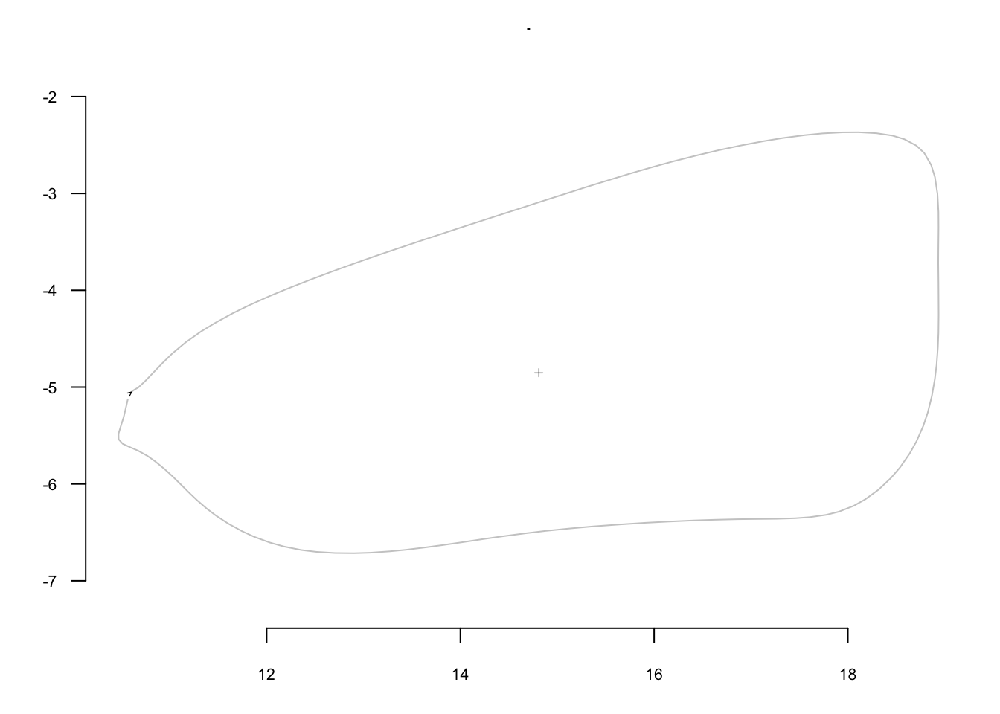
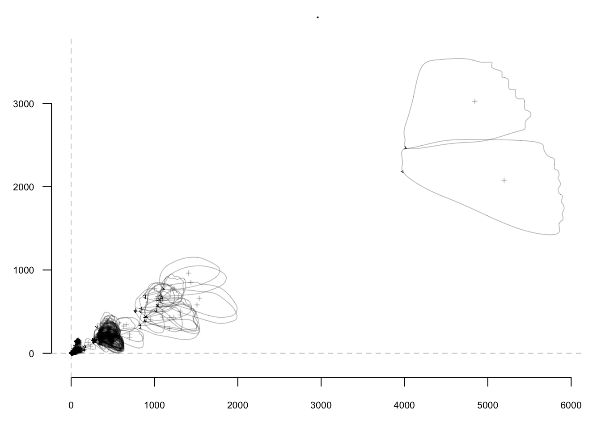
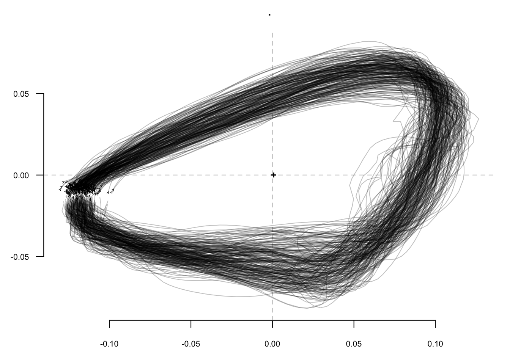
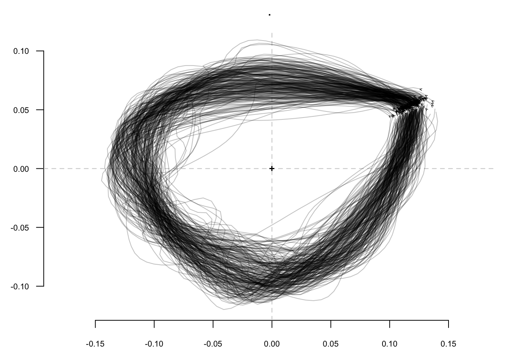
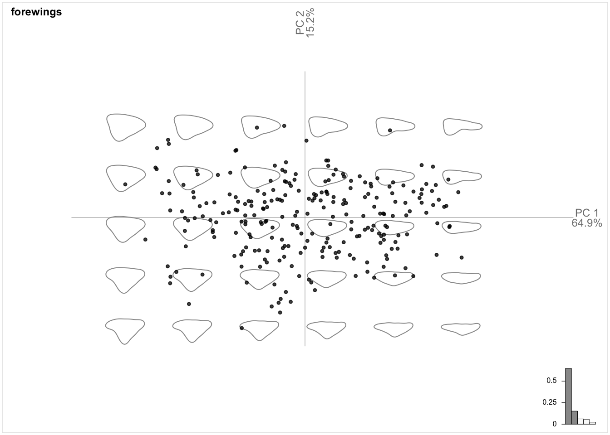
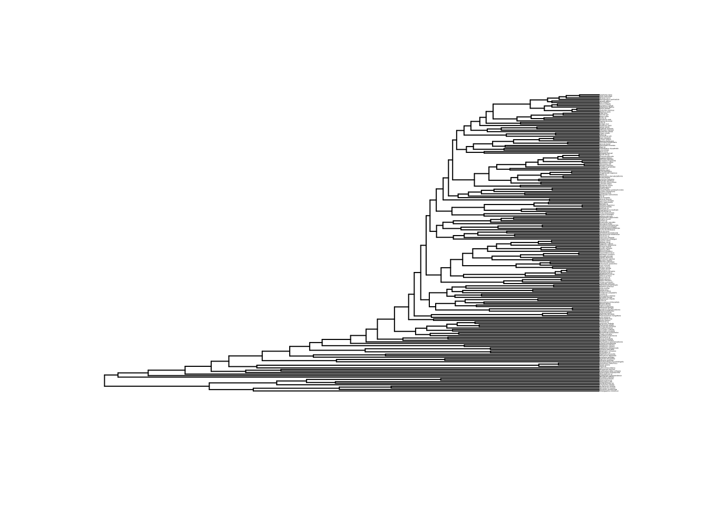

Module 6 Project
Introduction
Butterflies and moths (the Lepidoptera) are an exceptional radiation of insects, comprising nearly 160,000 described extant species. (For context, the vertebrates comprise just 70,000 species or so.) The Lepidoptera play a fundamental role in almost every terrestrial ecosystem. These ecologically important species use paired wings to power flight in search of places to lay eggs, feed on nectar and other resources, and find mates. The airy environment in which moths and butterflies fly undoubtedly exerts natural selective pressure on wing size and shape. However, it appears as if the hind- and forewings have different roles to play in powered flight and the ecology of the Lepidoptera. If hindwings are removed from butterflies, they are able to fly, but at the cost of speed and maneuverability (Jantzen and Eisner 2008). Therefore, it has been proposed that forewing shape and size may be the result of stabilizing selection imposed by the physical and fluid requirements of flight and hindwing shape and size may be determined more by neutral selection, sexual selection, or selection due to predator avoidance (Sourakov 2013, Barber et al. 2015, Willmott et al. 2017, Rubin et al. 2018, Chazot et al. 2016).

The anotomy of a butterfly or moth.
Studies based on experimental manipulations like those of Jantzen and Eisner (2008), important as they are, are limited in their ability to characterize shape variables and the ecological roles of fore- and hind wings over evolutionary time scales and across lepidopteran lineages. Comparative analysis of shape data from natural history collections has helped bridge the gap between experimental studies and macroevolutionary patterns. If there is, in fact, different constraints on the evolution of fore- and hindwing morphology, we would expect to find a consistent patterns of different fore- and hindwing shape across the lepidoptera. Indeed, a number of studies have investigated whether for- and hindwing shape and size differs in several isolated groups of butterflies. Strauss (1990) found the shape of hindwings were much more variable than forewings in heliconiine and ithomiine butterflies. In contrast, Chazot et al. (2016) found a strong correlation between forewing and hindwing shapes in the famous morpho group of butterflies. Therefore, the limited research on this topic does not resolve whether fore- and hindwing shape differ consistently across the Lepidoptera. Each of these studies was limited in their phylogenetic scope, encompassing very few species spanning few families of butterflies. Addressing whether fore- and hindwing shape varies independently, a much broader phylogenetic sample should be analyzed, one that includes not just representatives of the butterfly lineage, but also moths.

Several species of Heliconiinae butterflies, demonstrating the variability in wingshape. From Penz and Peggie (2003).
The goal of this project is to study wing-shape evolution across the lepidoptera, including hundreds of species from both the moths (a paraphyletic group) and butterflies. To do this, we’ll take a morphometric approach, characterizing the shape outline of fore- and hindwings from about 200 species of Lepidoptera. The specific questions we’ll answer with our morphometric data are:
Do hind- and forewings vary in their evolutionary rates?
Does the “evolvability” of the hind- and forewings vary significantly among major lineages of moths and butterflies?
Is hindwing and forewing shape correlated?
Methods
Image acquisition
A few decades ago, a morphometric project like this would require visiting museums collections from around the world to take images of the specimens and species of interest. In fact, this was a major part of Prof. Kenaley’s PhD thesis, which included trips to natural history collections in France, Denmark, Great Britain, Taiwan, Japan, Monaco, New Zealand, and Australia. Ahhhhhh, the good ol’ days. Fortunately (or unfortunately), travel to such wonderful places may be avoided as collections have made major efforts to photograph their specimens. Now that most museums around the world have their holdings cataloged in databases, researchers can search their collections for records that have digital images.
Until very recently, amassing a data set of images for morphometric
work would require querying individual databases, one at a time.
However, most natural history museums share their data with the Global
Biodiversity Information Facility (GBIF), a clearing house of
collections and species information. In the context of a comparative
project like ours, one could search the GBIF database online for moth
and butterfly records that have images. Fortunately for use, the folks
at GBIF have created and R package, rgif, that
permits access to GBIF’s application programming interface (API),
rendering their records searchable from the command line.
Prof. Kenaley used this package, rgbif, to query museum
records with images. This resulted in a cache of about 180 images of the
the 200 species included in the Kawahara et al.
(2019) phylogeny. For the remainder, he scoured the interwebs for
reputable sources of images. The images ## Species list and
phylogeny
Because we’ll be comparing wing shape across species of the Lepidoptera, this project is by definition a comparative one and we’ll need a phylogeny for the group. Fortunately a recent phylogenomic analysis for 200 species of Lepidotera by Kawahara et al. (2019) resolved the relationships of the major groups of this order. We’ve used the taxa studied in this paper to find images in GBIF and we’ll use a tree file representing phylogeny for our comparative analsyis.

Digitization
Our shape analysis will be based on the outline of the hind- and fore-wings of ~200 species of Lepidoptera. To outline the wings, we’ll follow this generalize workflow below in the image analysis program FIJI (FIJI is just imageJ).

You and your team should will be assigned about 20 of the ~200 species to outline. Images of these species can be accessed through [thes directories] (https://drive.google.com/drive/folders/1TYAzcMcH0u64OEqsuc61W97zIL7qLGWU?usp=sharing). First choose one of your species to work on. For each species, start with what you think is the best image, that is, it has a scale bar, the wings are not damaged, and the hindwing is most exposed. Open that best image in Fiji.
After opening the photo, follow the steps above.
If there’s a scale bar, set the scale. Please set the scale in mm.
If the right wing pair is damaged, flip the image horizontally. Select “Image” \(\rightarrow\) “Transform” \(\rightarrow\) “Flip horizontally”. Note: you may have to do this only for the fore- or hindwing.
Select the polygon selection tool.
Trace the wing by placing the first point on the polygon on the anterior margin of the wing where it meets the thorax. Like so . .

Continue to trace the outline of the wing being sure to include enough points to capture more complex areas. For instance, in this swallowtail hindwing, it may require 30 or more points to outline the interesting projections along the posterior margin.

You may also find it easier to get an acurate outline if you zoom in
(crtl+ or command+).
- Run the following macro in imageJ.
run("Fit Spline");
run("Properties... ", "list");This script fits a spline through the selected points and produces a list of the x,y coordinates.
Note: For the first image you outline, you will have to open the macro editor (“Plugins” \(\rightarrow\) “New” \(\Macro\)). Paste the script command from above into the editor and save this new macro to an appropriate directory, perhaps you cloned repo. You’ll want to access this later (“Plugins” \(\rightarrow\) “Edit”) so that you automate this process.
- Save the results table that pops up and be sure to append either
“_hindwing” or “_forewing” to the file name and make sure this is before
the “.txt” file extension.
command+sorctrl+sworks. This is super important!!
For some species there may be only one image. For others there may be 10 or more. If you can, aim to outline the wing of three specimens per species.
After your team has completed outlining the assigned species, upload your text files to this directory. Once all the data appear here, Prof. Kenaley will evaluate the quality of the outlines and do some post-processing if required (i.e., file-name checks, outline quality, etc.). You can then download these evaluated data for shape analysis.
Shape analysis
As we learned in class and you’ve been reading, researchers interested in comparing shape change between species can use one of two methods: landmark- or outline-base shape analysis. We’ll use the latter.
Outline analysis involves breaking the shapes down into a mathematical description of the points that constitute the shapes. The most popular approach for fitting functions is elliptical Fourier analysis (EFA) in which the shapes in a data set are described as a series of ellipses. EFA attempts to align a number of ellipses to the outline of shapes and the scale of the major and minor axes of the ellipses are then used as the descriptor of the shapes. Of course, one could fit a lot of ellipses and describe the shape perfectly, i.e., with 100% power; however practitioners usually stop short of this and choose some lower lever of lower, say 99%. The number of ellipses is referred to as the number of harmonics. In the figure below, you see the a higher number of harmonics describe the shape in question more perfectly.

Elliptical Fourier analysis of the pygostyle, the fused plate of caudal vertebrae that support tail feathers in birds.
Once EFA is used to describe the shapes in a data set, one is left with many variables to consider including all the descriptors of all the ellipses that form the outlines. This could be many hundreds of variables in a data set like ours. This is a serious multivariate problem.
For such a problem, researchers usually turn to Principal Components Analysis (PCA) whereby the very complicated suite of variables is distilled into a set of fewer variables that describe the important variance among the original variables. In a sense, PCA produces a series of regressions, or vectors, that pass through the values of the original variables. This operation is performed iteratively, with the first vector (the first principal component, PC1), drawn through the variable space that accounts for the most variance in the data set. After the combination of variables forming PC1 is removed, a subsequent vector (PC2) is drawn through another unique variable space that describes the second most amount of variance. This continues until most of the variance is captured, resulting in scores of PCs. The first two or three, however, are usually enough to describe a health amount of variance, say 90% or more.
To perform EFA and then PCA, we need only to turn to one R package,
Momocs. Let’s load this package and begin with an example
analysis that we can scale up on our full data set.
Let’s begin by reading in one of the outline text files,
Prof. Kenaley has already produced for 10 species of butterflies and
moths. Please download these to follow
along. You can unzip this directory and place it your project
directory.
You can begin the full analysis by downloading this zipped directory, unzipping it, and placing it in your project directory
library(tidyverse)
library(Momocs)
f <- list.files("class_out_data",pattern=".txt|.csv",full.names = TRUE)
out <- read_delim(f[1],delim="\t") %>%
as.matrix()
out %>%
list() %>%
Out() %>%
coo_flipx() %>%
stack()
Notice that we’ve found all the files in the “lep_examples” directory
with list.files(), searching for the patter “.txt” and
using the full filepath to make a loading the data in the directory
possible. Next, we use read_delim() with
delim=\t rather than read_csv() because FIJI
outputs tab-delimited data. We save this outline as out
after tranforming it to a matrix, the prefer format for
Momocs.
In the next operation, we transform this matrix into an
Momocs outline using Out(); however,
Out() must take a list of matrices and therefore we pipe in
the list() function first. Next, coo_flipx()
is invoked to flip the outline about the x axis–remember that the origin
of the image field is the upper left, not the lower left in the usual
graphical representation. Lastly, stack() is invoked to
visualize the outline. And here we have a forewing visualized.
Now, we will of course have hundreds of files to load and analyze
with PCA. For this challenge we will the vroom() function
in the vroom package. It can read in all our data,
regardless of whether the data are tab- or comma-separated, an issue
identified in class. We have the file paths stored in f,
which can be passed through this function.
As was mentioned above, the Out() function prefers a
list, so we can work on the list established here to visualize our
outlines. we’ll have to construct a list a little differently.
#make a large df with vroom
out.df <- vroom::vroom(f, id = "filename")
#make list
outs.l <- sapply(f,function(x) out.df %>% filter(filename==x) %>% select(X,Y) %>% as.matrix)
outs.l %>%
Out() %>%
coo_flipx() %>%
stack()
Wonderful! Fore- and hindwings loaded for the 10 examples species. However, notice we have a few problems. First, both fore- and hindwing are included in the in the same data set. This confounds analyzing and comparing shape in fore- and hindwing separately, a major goal of this project. Second, the outlines are of arbitrary size due to how much of the pixel field they spanned in the photos and whether or not a scale in mm was set. Thus, this arbitrary size scale would confound shape analysis from the start. Let’s take on fixing the hindwing-forewing issue first and, later, we’ll tackle the size issue.
Fortunately, we know whether each outline comes from either a fore-
or hindwing because we added these metadata to the file name. Thus,
we merely need to strip this information from the file name when loading
the data in our The for loop. Let’s do that by modified the
loop.vroom() function stores filename data in a
column as a way to identify data (we specified the name of this column
with id =filename`.
#make a large df with vroom
out.df <- vroom::vroom(f, id = "filename")
#add wing info
out.df <- out.df %>%
mutate(wing=gsub("XY_.+_(hindwing|forewing)\\..+","\\1",basename(filename))) %>%
na.omit()
#make list
outs.l <- sapply(f,function(x) out.df %>% filter(filename==x) %>% select(X,Y) %>% as.matrix)
#extract wing info
wings <- gsub("XY_.+_(hindwing|forewing)\\..+","\\1",basename(names(outs.l)))Here, we use a general regular expression function
gsub(), which finds a
character string within a fuller string and replaces it. In this
case, we’ve asked gsub() to find either “hindwing” or
“forewing” by using “|” for the or part. We’ve also specified that these
two strings will be after any string (grep “.”) of any
length (grep “+”) and after the “_“. They’ll also appear
before”.txt”. Each wing descriptor is saved to a unique position in the
list wing.l.
To store our wing descriptors within our outlines, we can access the
fac option in Out() when transforming our list
of matrices into a list of Momocs outlines. This
fac option takes a list of named one-dimensional vectors,
so we make a list with a name “wing” that has the unlisted values of
wing.l. Let’s save this newly labeled list of outlines as
outs.
Now we can invoke Momocs tidy-like
filter() function to parse the outlines according to their
wing. Let’s do that and visualize each group with
stack().
forewings <- outs %>%
filter(wing=="forewing")
hindwings <- outs %>%
filter(wing=="hindwing")
forewings %>%
stack()

Now that we have two lists of outlines ready for analysis, let’s come back to our size issue. If we ran and EFA analysis on these outlines, most of the variance would be due to their arbitrary size differences. To address this, practitioners of shape analysis transform their shapes into a common coordinate space that removes size altogether. The method of choice for this is the Procrustes transformation. This method superimposes the shapes by optimally translating, rotating and uniformly scaling the objects. That is, both the placement in space and the size of the shapes are freely adjusted so that they are the same size and the distance between the positions of the points constituting the shape is reduced. To align the shapes, the can be compared to an arbitrarily selected reference shape (referred to as ordinary Procrustes analysis) or the shapes can be aligned to an optimally determined mean shape (referred to as generalized Procrustes analysis). We’ll perform the latter.
Fortunately, Momocs has just a function for generalize
Procrustes superimposition, fgProcrustes(). Let’s use this
and visualize our results. But before we do, we must tackle another
problem: our outlines have a variable number of coordinates, making it
impossible for fgProcrustes() to minimize the distance
between points in each outline (which would it choose?). So we’ll just
sample 100 of the points in each outline using Momocs’s
coo_interpolate(). This function fits a spline with high
resolution to all the shapes and extracts a determined number of points
at equal intervals. We can easily find the number of coordinates in each
each set of wings and use the minimum value as the number we’ll sample
with coo_interpolate(). this will minimize the amount of
information we lose.
fore.min <- forewings %>%
coo_nb() %>%
min()
forewings %>%
coo_interpolate(fore.min) %>%
fgProcrustes() %>%
stack()
hind.min <- hindwings %>%
coo_nb() %>%
min()
hindwings %>%
coo_interpolate(hind.min) %>%
coo_slide(id=1) %>%
coo_align() %>%
fgProcrustes() %>%
stack()
Now all that’s left to do is perform the EFA and then we can move on
to PC analysis. For this, all we have to do is pipe in the
Momocs EFA function, efourier(). We’ll do this
and specify norm=FALSE for these very
arcane reasons.
forewings %>%
coo_interpolate(fore.min) %>%
coo_align() %>%
fgProcrustes() %>%
efourier(norm=FALSE)
hindwings %>%
coo_interpolate(hind.min) %>%
coo_align() %>%
fgProcrustes() %>%
efourier(norm=FALSE) Performing the PCA is just as easy. We just finally add
PCA() with the pipe. We’ll have the results in
appropriately name variables.
forewing.pca <- forewings %>%
coo_interpolate(fore.min) %>%
coo_align() %>%
coo_slide(id=1) %>%
fgProcrustes() %>%
efourier(norm=FALSE) %>%
PCA()
hindwing.pca <-hindwings %>%
coo_interpolate(hind.min) %>%
coo_align() %>%
coo_slide(id=1) %>%
fgProcrustes() %>%
efourier(norm=FALSE) %>%
PCA()We can visualize the PCA with plot_PCA(), which will, by
default produce a biplot of the first two PCs, the amount of variance
explained by each, and a representation of the morphoshape described by
the PCs (the outlines in the background).


Now we can move on to the comparative analysis.
Comparative analysis
Before we begin, Let’s remind ourselves of the questions we’re attempting to answer so that we can figure out exactly how to answer then. First, do hind- and forewings vary in their evolutionary rates? Second, do major groups of the Lepidoptera vary in their hind- and forewing evolvability?
For this first question, we can simply evaluate the evolutionary rate of our PC scores for the hind and forewings using a method of choice. For the second question, we can look at the evolutionary rates of our PC scores across our Lepidopteran tree.
First of all, as mentioned previously, we need a tree and fortunately
we have one for these species. Indeed, the species choice for this
project was based on those sampled in the Kawahara et al. (2019) study. So let’s load the
tree you can download here. Make sure it’s
in your project’s directory. We’ll use read.tree() from the
ape package and plot it just to check things out. Notice
cex=0.1 to keep the tip labels small in the relatively
large tree.
##
## Attaching package: 'ape'## The following object is masked from 'package:dplyr':
##
## where
Looks great; however, the convention is for the root of the tree to
be positioned in the upper left. This is easy to fix with
ape’s laddersize() function. We’ll also remove
the pesky underscore between names in the tip labels. This will help
with joining the tree data with our species data.

Now that we have our PCA data and a tree of species, we need to a add
species information (e.g., the species, higher taxonomic information,
etc.) to the shape data so the tree and shape data can work together.
Notice that each species is represented in the outs list
(from whence our PCA is derived) by the file name that belongs to its
outline. Let’s look at their names.
## [1] "XY_001FE051A037367D9317121CD75AD958605A968812F4D791E7AC11800052DEBC_forewing.txt"
## [2] "XY_001FE051A037367D9317121CD75AD958605A968812F4D791E7AC11800052DEBC_hindwing.txt"
## [3] "XY_002-02-Thymelicus_sylvestris_(211a)_forewing.txt"
## [4] "XY_002-02-Thymelicus_sylvestris_(211a)_hindwing.txt"
## [5] "XY_04-SRNP-2010-DHJ331720%2B1145363716_forewing.txt"Not a bit of species data. However, Prof. Kenaley has stored the filenames of each species in a table you can download here. Have a look.
## Rows: 1106 Columns: 5
## ── Column specification ────────────────────────────────────────────────────────
## Delimiter: ","
## chr (5): species, identifier, higher_taxon, common_name, highest_common_name
##
## ℹ Use `spec()` to retrieve the full column specification for this data.
## ℹ Specify the column types or set `show_col_types = FALSE` to quiet this message.## # A tibble: 6 × 5
## species identifier higher_taxon common_name highest_common_name
## <chr> <chr> <chr> <chr> <chr>
## 1 Acanthopteroctetes un… Acanthopt… Neopseustoi… Archaic be… moths
## 2 Acanthopteroctetes un… MCZ-ENT00… Neopseustoi… Archaic be… moths
## 3 Acrocercops transecta transecta… Gracillario… Cocoon-mak… moths
## 4 Actias luna MCZ-ENT00… Bombycoidea Sphynx/Sil… moths
## 5 Actias luna MCZ-ENT00… Bombycoidea Sphynx/Sil… moths
## 6 Actias luna UDCC_TCN_… Bombycoidea Sphynx/Sil… mothsHave a look at the column “identifier”.
## [1] "Acanthopteroctetes_unifascia_M_1477601198_lg"
## [2] "MCZ-ENT00754647_Acanthopteroctetes_unifascia_had"
## [3] "transecta_Acrocercops_A_EIHU"
## [4] "MCZ-ENT00639291_Actias_luna_had"
## [5] "MCZ-ENT00639295_Actias_luna_had"
## [6] "UDCC_TCN_00062177_1487105077_lg"This is the vector of the image file names minus the extension (.jpg, .png, etc.). Notice that our outline names, rather than species, contain this information~~you saved the FIJI results as “XY_filename_hingwing.txt” or “XY_filename_forewing.txt”. That is, this very same identifier in the species table is buried in the names of our outline data. So let’s make a new tibble that strips the same identifier from the outline names and join the species data to this new tibble.
out.data <- tibble(xy.file=basename(names(outs))) %>%
mutate(identifier=gsub("XY_|_hindwing|_forewing|.txt","",xy.file)) %>%
left_join(lep.sp)## Joining with `by = join_by(identifier)`## Warning in left_join(., lep.sp): Detected an unexpected many-to-many relationship between `x` and `y`.
## ℹ Row 5 of `x` matches multiple rows in `y`.
## ℹ Row 810 of `y` matches multiple rows in `x`.
## ℹ If a many-to-many relationship is expected, set `relationship =
## "many-to-many"` to silence this warning.## # A tibble: 6 × 6
## xy.file identifier species higher_taxon common_name highest_common_name
## <chr> <chr> <chr> <chr> <chr> <chr>
## 1 XY_001FE051A0… 001FE051A… Operop… Geometroidea Geometrid … moths
## 2 XY_001FE051A0… 001FE051A… Operop… Geometroidea Geometrid … moths
## 3 XY_002-02-Thy… 002-02-Th… Thymel… Papilionoid… Papilionoi… butterflies
## 4 XY_002-02-Thy… 002-02-Th… Thymel… Papilionoid… Papilionoi… butterflies
## 5 XY_04-SRNP-20… 04-SRNP-2… Macros… Papilionoid… Papilionoi… butterflies
## 6 XY_04-SRNP-20… 04-SRNP-2… Macros… Papilionoid… Papilionoi… butterfliesWith this tibble in place, we can now add species information to our
PCA data. The PC scores are stored in the the variable x,
so we can summon them this way. Notice that the row names correspond to
the outline file names, a column in out out.data
tibble.
## PC1
## class_out_data/XY_001FE051A037367D9317121CD75AD958605A968812F4D791E7AC11800052DEBC_hindwing.txt 0.003631148
## PC2
## class_out_data/XY_001FE051A037367D9317121CD75AD958605A968812F4D791E7AC11800052DEBC_hindwing.txt 0.009192726
## PC3
## class_out_data/XY_001FE051A037367D9317121CD75AD958605A968812F4D791E7AC11800052DEBC_hindwing.txt -0.006802928
## PC4
## class_out_data/XY_001FE051A037367D9317121CD75AD958605A968812F4D791E7AC11800052DEBC_hindwing.txt 0.008706418
## PC5
## class_out_data/XY_001FE051A037367D9317121CD75AD958605A968812F4D791E7AC11800052DEBC_hindwing.txt 0.001515087
## PC6
## class_out_data/XY_001FE051A037367D9317121CD75AD958605A968812F4D791E7AC11800052DEBC_hindwing.txt -0.0003417152
## PC7
## class_out_data/XY_001FE051A037367D9317121CD75AD958605A968812F4D791E7AC11800052DEBC_hindwing.txt 6.897441e-05
## PC8
## class_out_data/XY_001FE051A037367D9317121CD75AD958605A968812F4D791E7AC11800052DEBC_hindwing.txt -7.398159e-05
## PC9
## class_out_data/XY_001FE051A037367D9317121CD75AD958605A968812F4D791E7AC11800052DEBC_hindwing.txt -0.0003655859
## PC10
## class_out_data/XY_001FE051A037367D9317121CD75AD958605A968812F4D791E7AC11800052DEBC_hindwing.txt 0.0002388014
## PC11
## class_out_data/XY_001FE051A037367D9317121CD75AD958605A968812F4D791E7AC11800052DEBC_hindwing.txt -0.0006352358
## PC12
## class_out_data/XY_001FE051A037367D9317121CD75AD958605A968812F4D791E7AC11800052DEBC_hindwing.txt -0.0002105339
## PC13
## class_out_data/XY_001FE051A037367D9317121CD75AD958605A968812F4D791E7AC11800052DEBC_hindwing.txt -0.0001928168
## PC14
## class_out_data/XY_001FE051A037367D9317121CD75AD958605A968812F4D791E7AC11800052DEBC_hindwing.txt 0.0005111482
## PC15
## class_out_data/XY_001FE051A037367D9317121CD75AD958605A968812F4D791E7AC11800052DEBC_hindwing.txt 0.0003291319
## PC16
## class_out_data/XY_001FE051A037367D9317121CD75AD958605A968812F4D791E7AC11800052DEBC_hindwing.txt 0.0002054958
## PC17
## class_out_data/XY_001FE051A037367D9317121CD75AD958605A968812F4D791E7AC11800052DEBC_hindwing.txt 1.703826e-06
## PC18
## class_out_data/XY_001FE051A037367D9317121CD75AD958605A968812F4D791E7AC11800052DEBC_hindwing.txt -0.0002223371
## PC19
## class_out_data/XY_001FE051A037367D9317121CD75AD958605A968812F4D791E7AC11800052DEBC_hindwing.txt -0.0001073889
## PC20
## class_out_data/XY_001FE051A037367D9317121CD75AD958605A968812F4D791E7AC11800052DEBC_hindwing.txt 0.0003295411
## PC21
## class_out_data/XY_001FE051A037367D9317121CD75AD958605A968812F4D791E7AC11800052DEBC_hindwing.txt 4.388289e-05
## PC22
## class_out_data/XY_001FE051A037367D9317121CD75AD958605A968812F4D791E7AC11800052DEBC_hindwing.txt 8.539475e-05
## PC23
## class_out_data/XY_001FE051A037367D9317121CD75AD958605A968812F4D791E7AC11800052DEBC_hindwing.txt -6.414159e-05
## PC24
## class_out_data/XY_001FE051A037367D9317121CD75AD958605A968812F4D791E7AC11800052DEBC_hindwing.txt -0.0002203433
## PC25
## class_out_data/XY_001FE051A037367D9317121CD75AD958605A968812F4D791E7AC11800052DEBC_hindwing.txt -3.704748e-05
## PC26
## class_out_data/XY_001FE051A037367D9317121CD75AD958605A968812F4D791E7AC11800052DEBC_hindwing.txt 1.284548e-05
## PC27
## class_out_data/XY_001FE051A037367D9317121CD75AD958605A968812F4D791E7AC11800052DEBC_hindwing.txt -5.584923e-05
## PC28
## class_out_data/XY_001FE051A037367D9317121CD75AD958605A968812F4D791E7AC11800052DEBC_hindwing.txt -3.860342e-05## PC1
## class_out_data/XY_001FE051A037367D9317121CD75AD958605A968812F4D791E7AC11800052DEBC_forewing.txt -0.01074412
## PC2
## class_out_data/XY_001FE051A037367D9317121CD75AD958605A968812F4D791E7AC11800052DEBC_forewing.txt 0.004120168
## PC3
## class_out_data/XY_001FE051A037367D9317121CD75AD958605A968812F4D791E7AC11800052DEBC_forewing.txt 0.004827417
## PC4
## class_out_data/XY_001FE051A037367D9317121CD75AD958605A968812F4D791E7AC11800052DEBC_forewing.txt -0.003684695
## PC5
## class_out_data/XY_001FE051A037367D9317121CD75AD958605A968812F4D791E7AC11800052DEBC_forewing.txt 0.002192293
## PC6
## class_out_data/XY_001FE051A037367D9317121CD75AD958605A968812F4D791E7AC11800052DEBC_forewing.txt 0.002442838
## PC7
## class_out_data/XY_001FE051A037367D9317121CD75AD958605A968812F4D791E7AC11800052DEBC_forewing.txt -0.0004570351
## PC8
## class_out_data/XY_001FE051A037367D9317121CD75AD958605A968812F4D791E7AC11800052DEBC_forewing.txt -0.0002269393
## PC9
## class_out_data/XY_001FE051A037367D9317121CD75AD958605A968812F4D791E7AC11800052DEBC_forewing.txt 8.094222e-05
## PC10
## class_out_data/XY_001FE051A037367D9317121CD75AD958605A968812F4D791E7AC11800052DEBC_forewing.txt -0.0006470142
## PC11
## class_out_data/XY_001FE051A037367D9317121CD75AD958605A968812F4D791E7AC11800052DEBC_forewing.txt -0.001184385
## PC12
## class_out_data/XY_001FE051A037367D9317121CD75AD958605A968812F4D791E7AC11800052DEBC_forewing.txt -0.0003884604
## PC13
## class_out_data/XY_001FE051A037367D9317121CD75AD958605A968812F4D791E7AC11800052DEBC_forewing.txt 0.0001563969
## PC14
## class_out_data/XY_001FE051A037367D9317121CD75AD958605A968812F4D791E7AC11800052DEBC_forewing.txt 0.001037976
## PC15
## class_out_data/XY_001FE051A037367D9317121CD75AD958605A968812F4D791E7AC11800052DEBC_forewing.txt 0.0005432077
## PC16
## class_out_data/XY_001FE051A037367D9317121CD75AD958605A968812F4D791E7AC11800052DEBC_forewing.txt -9.424748e-05
## PC17
## class_out_data/XY_001FE051A037367D9317121CD75AD958605A968812F4D791E7AC11800052DEBC_forewing.txt -0.0006194248
## PC18
## class_out_data/XY_001FE051A037367D9317121CD75AD958605A968812F4D791E7AC11800052DEBC_forewing.txt 0.0003362484
## PC19
## class_out_data/XY_001FE051A037367D9317121CD75AD958605A968812F4D791E7AC11800052DEBC_forewing.txt -0.0001292404
## PC20
## class_out_data/XY_001FE051A037367D9317121CD75AD958605A968812F4D791E7AC11800052DEBC_forewing.txt -0.0002396219
## PC21
## class_out_data/XY_001FE051A037367D9317121CD75AD958605A968812F4D791E7AC11800052DEBC_forewing.txt -0.0002199065
## PC22
## class_out_data/XY_001FE051A037367D9317121CD75AD958605A968812F4D791E7AC11800052DEBC_forewing.txt 0.0002409763
## PC23
## class_out_data/XY_001FE051A037367D9317121CD75AD958605A968812F4D791E7AC11800052DEBC_forewing.txt 5.67136e-05
## PC24
## class_out_data/XY_001FE051A037367D9317121CD75AD958605A968812F4D791E7AC11800052DEBC_forewing.txt 6.950923e-06
## PC25
## class_out_data/XY_001FE051A037367D9317121CD75AD958605A968812F4D791E7AC11800052DEBC_forewing.txt 0.0001779673
## PC26
## class_out_data/XY_001FE051A037367D9317121CD75AD958605A968812F4D791E7AC11800052DEBC_forewing.txt 1.349174e-05
## PC27
## class_out_data/XY_001FE051A037367D9317121CD75AD958605A968812F4D791E7AC11800052DEBC_forewing.txt 4.460915e-05
## PC28
## class_out_data/XY_001FE051A037367D9317121CD75AD958605A968812F4D791E7AC11800052DEBC_forewing.txt -7.454586e-06Let’s now join the species information in our out.data
tibble to the PCA data, storing these in new variables.
hindwing.pca2 <- tibble(xy.file=basename(rownames(hindwing.pca$x)),PC1=hindwing.pca$x[,1],PC2=hindwing.pca$x[,2]) %>%
left_join(out.data)## Joining with `by = join_by(xy.file)`forewing.pca2 <- tibble(xy.file=basename(rownames(forewing.pca$x)),PC1=forewing.pca$x[,1],PC2=forewing.pca$x[,2])%>%
left_join(out.data)## Joining with `by = join_by(xy.file)`Now we have the first 2 PCs for each wing stored with species information and are now ready for comparative analysis.
Evolutionary rates
There are several methods available to comparative biologist to
estimate the rates of morphological evolution over a phylogenetic tree.
We’ll be using O’Meara et al. (2006)’s
method, the so-called “noncensored test” which uses the entire
varian-cecovariance matrix (established by the a phylogeny) to calculate
the likelihood of rates accross the tree. In this approach, one
ancestral state is estimated under Brownian motion for the entire tree
and the the optimal rate parameter values are estimated numerically
until the likelihood of the model is maximized. This method is captured
in the R package phytools with the function
brownie.lite().
brownie.lite() takes two important arguments, a tree and
the phenotypic values for each tip in the tree. Let’s take our tree and
drop any tips that don’t occur in our PCA data.
drops <- c(
setdiff(unique(out.data$species),lep.tree$tip.label), #sp in tree not in data
setdiff(lep.tree$tip.label,unique(out.data$species)) #sp in data, not in tree
)
lep.tree2 <- drop.tip(lep.tree,drops)
plot(lep.tree2,cex=0.1)
Here we only include lep.tree tip labels that are in the
unique species values of our out.data variable. Then we use
ape’s drop.tip() function to drop the tips in
our tree that don’t occur in our out.data tibble.
The phenotypic data passed to the x argument must be a
named vector of values, so let’s establish that for PCs 1 and 2, for
both the hind- and forewings.
#PC1s
hind.pc1 <- hindwing.pca2 %>%
filter(species%in% lep.tree2$tip.label) %>%
group_by(species) %>%
summarize(PC1=mean(PC1)) %>%
pull
names(hind.pc1) <- hindwing.pca2%>%
filter(species%in% lep.tree2$tip.label) %>%
group_by(species) %>%
summarize(PC1=mean(PC1)) %>%
pull(species)
fore.pc1 <- forewing.pca2 %>%
filter(species%in% lep.tree2$tip.label) %>%
group_by(species) %>%
summarize(PC1=mean(PC1)) %>%
pull(PC1)
names(fore.pc1) <- forewing.pca2 %>%
filter(species%in% lep.tree2$tip.label) %>%
group_by(species) %>%
summarize(PC1=mean(PC1)) %>%
pull(species)
#PC2s
hind.pc2 <- hindwing.pca2 %>%
filter(species%in% lep.tree2$tip.label) %>%
group_by(species) %>%
summarize(PC2=mean(PC2)) %>%
pull(PC2)
names(hind.pc2) <- hindwing.pca2%>%
filter(species%in% lep.tree2$tip.label) %>%
group_by(species) %>%
summarize(PC2=mean(PC2)) %>%
pull(species)
fore.pc2 <- forewing.pca2 %>%
filter(species%in% lep.tree2$tip.label) %>%
group_by(species) %>%
summarize(PC2=mean(PC2)) %>%
pull(PC2)
names(fore.pc2) <- forewing.pca2 %>%
filter(species%in% lep.tree2$tip.label) %>%
group_by(species) %>%
summarize(PC2=mean(PC2)) %>%
pull(species)Notice here that we filtered the PCA data to include only species that occur in our new, pruned tree. That is, tree species may be in the the PCA data, but species in the PCA data may not be in the tree. This is because some species queried in GBIF were returned as synonyms under different valid taxonomic names. We won’t worry about this now except to exclude these species as we have above and forge ahead.
## Loading required package: maps##
## Attaching package: 'maps'## The following object is masked from 'package:purrr':
##
## map##
## Attaching package: 'phytools'## The following object is masked from 'package:Momocs':
##
## rescaleforePC1.BM<-brownie.lite(lep.tree2,fore.pc1*10)
hindPC1.BM<-brownie.lite(lep.tree2,hind.pc1*10)
forePC2.BM<-brownie.lite(lep.tree2,fore.pc2*10)
hindPC2.BM<-brownie.lite(lep.tree2,hind.pc2*10)Also notice here that we multiplied our tip values by an arbitrary 10
units. This is because this algorithm
stumbles when tip branches are short and tip values are small.
Great, now we have evolutionary rate estimates of wing shape stored in
each variable under sig2.single.
## [1] 0.006841987With these values stored we can compare the evolutionary rate for the first and second PCs between fore- and hindwings, something you should do in your report.
Shape evolution correlation
To say something about whether hing- and forewing shape evolution is
correlated we could undertake phylogenetic least squares analysis like
we have in previous projects. But, we’ve done a ton already. So, let’s
make this simple and just perform phylogenetic
independent contrasts (PIC) analysis. First proposed by Felsenstein (1985) in his seminal paper, he
proposed using phylogenetic information (under a Brownian-motion like
model) to transform the original tip data into values that are
statistically independent of one another. This method is captured in the
ape function pic() For hindwing and forewing
PC1, such analysis would look like this.
Here we just inputed our stored PC vectors we used in the rate analysis and our tree of course. Now we have transformed values we can regress against one another. Let’s first plot them and see what we get.
PC1.pic <- tibble(
hind=hindPC1.pic,
fore=forePC1.pic
)
PC1.pic %>%
ggplot(aes(x=fore,y=hind))+geom_point()+geom_smooth(method="lm")## `geom_smooth()` using formula = 'y ~ x'
Wow! These PC1s Look pretty correlated! Let’s see what the r-squared
value is and if there is a significant relationship. For this, we need
simply to create a linear model and retrieve these values with
summary().
##
## Call:
## lm(formula = hind ~ fore, data = PC1.pic)
##
## Residuals:
## Min 1Q Median 3Q Max
## -0.0267436 -0.0043699 0.0001257 0.0049235 0.0256387
##
## Coefficients:
## Estimate Std. Error t value Pr(>|t|)
## (Intercept) -0.0002576 0.0005672 -0.454 0.65
## fore -0.9512761 0.0683887 -13.910 <2e-16 ***
## ---
## Signif. codes: 0 '***' 0.001 '**' 0.01 '*' 0.05 '.' 0.1 ' ' 1
##
## Residual standard error: 0.007712 on 183 degrees of freedom
## Multiple R-squared: 0.5139, Adjusted R-squared: 0.5113
## F-statistic: 193.5 on 1 and 183 DF, p-value: < 2.2e-16Project Report
Please submit your report to your team GitHub repository as an .Rmd document with HTML output that addresses the following:
- Are the rates of wing-shape evolution different between the hind- and forewing? By how much?
- Are hind- and forewing shapes correlated?
- What inferences can you make based on shape correlations and flight control?
Please be sure to answer these questions based on both PC1 and PC2 shape scores.
In answering your question, your .Rmd should include the following components:
- A YAML header that specifies HTML output, the authors, and a bibliograph named “BIOL3140.bib”. Submit this bibliography as well!
- Sections including an introduction, methods, results, discussion,
author contributions, and references. Make sure that each, aside from
the references, includes one to two short paragraphs. Specifially:
- Introduction: Frame the questions, indicating why they are important, what background work has been done in this realm, and how you will answer them. Please include at least one reference to support the summary of previous work. Note: this can be done easily by refiguring the introduction to this project report.
- Methods: Explicitly state how you answered the questions, including a narrative of all the anlyses both qualitative and quantitative.
- Results: Include any appropriate figures or tables and a narrative of the main results that are important to answering the questions.
- Discussion: Succinctly declare how the results relate to the question and how they compare to previous work devoted to the topic. In addition, be sure to comment on the importance of your findings to the broader topic at hand. Please include at least one reference to another relevant study. Note: circling back to the introductions, both to this project description and yours, will be helpful here.
- Author contributions: Briefly outline what each team member contributed to the project.
Project reports should be uploaded by 11:59 PM on Sunday, November 5th.